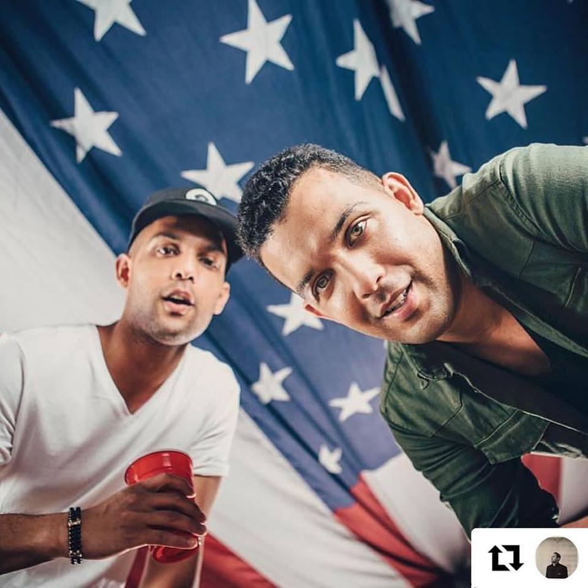

Hello,
My name is Ramy Elsokary. I am a filmmaker and freelance video editor based in Brooklyn, NY.
Between 2008 and 2016, I’ve worked with various companies to convey consumer products and lifestyle appearances.
Here’s what I believe:
Blur the edges of your profession. Dabbling in adjacent fields can only deepen your understanding and enrich your work. I believe in taking the time to do things right, the first time. It is important for those who make content, products, and services to be aware of the power they have. Take some material. Move it around, play with it, absorb and synthesize. Add structure, reinforce the good parts and rip out the bad bits. Patch up the holes that are left. Give it lyricism and grace and elegance. Make it for an audience, shaped so that they can understand it, the way you understand it.
That’s designing. That’s editing. The same frame of action.
ps. I have a twin brother
